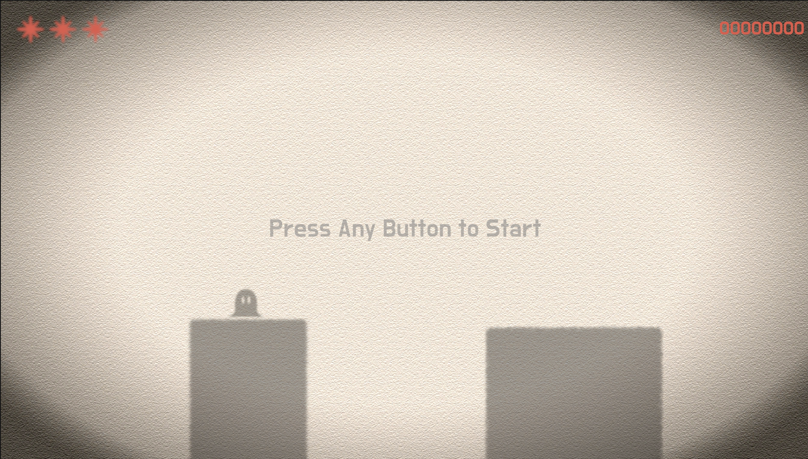
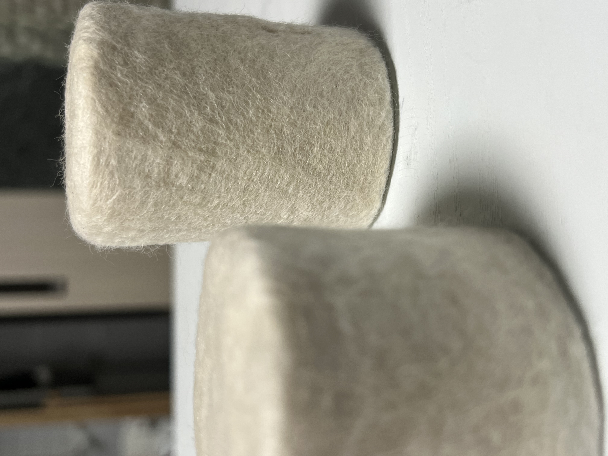

Concept
Shadow Play is an interactive media installation that explores the relationship between physical objects, light, and digital projection. The project investigates how users can interact with a space by manipulating tangible objects and observing how those actions transform projected visuals.
Rather than interacting with a traditional screen interface, participants engage with the installation through physical objects placed within a projected environment. As users move and arrange these objects, their shadows interact with digital visual elements, creating dynamic spatial relationships between the physical and virtual layers of the installation.
The project aims to design an experience where digital interaction emerges naturally from real-world actions, allowing users to intuitively explore the relationship between light, space, and movement.


Exhibition
The work was exhibited to the public at Shinsegae Nexperium Science Museum in Daejeon, allowing visitors to directly experience the interactive installation.